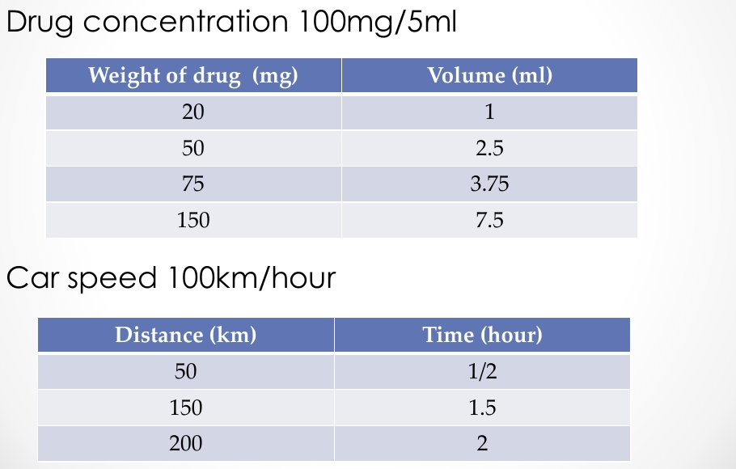
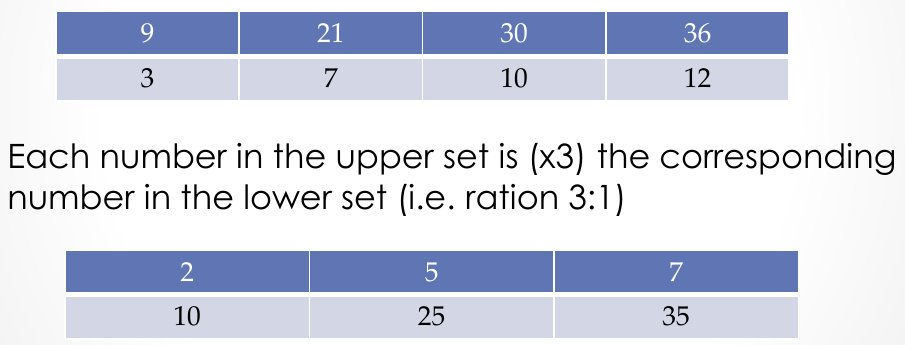
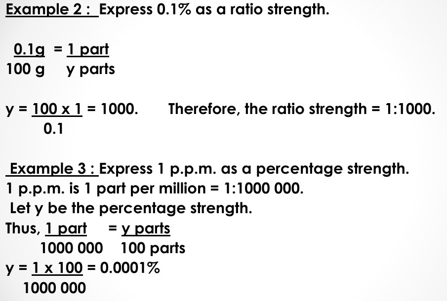
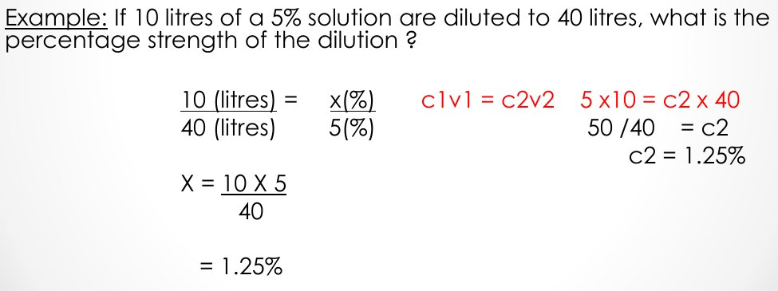
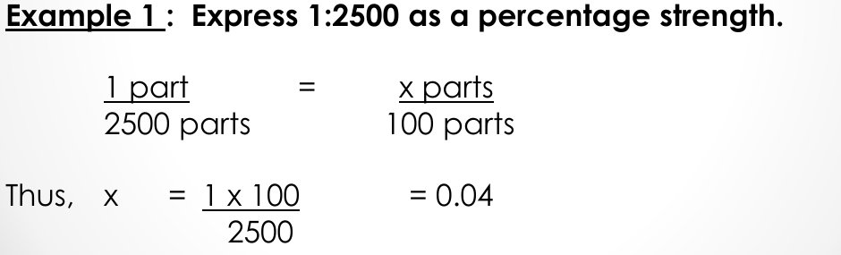
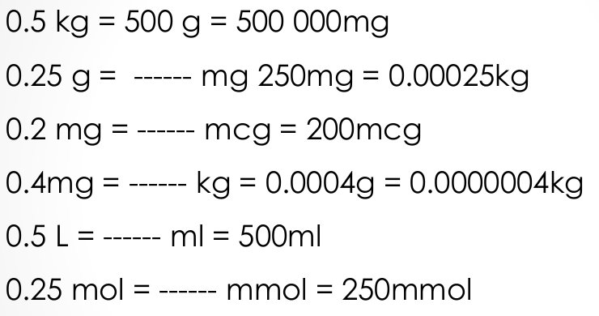
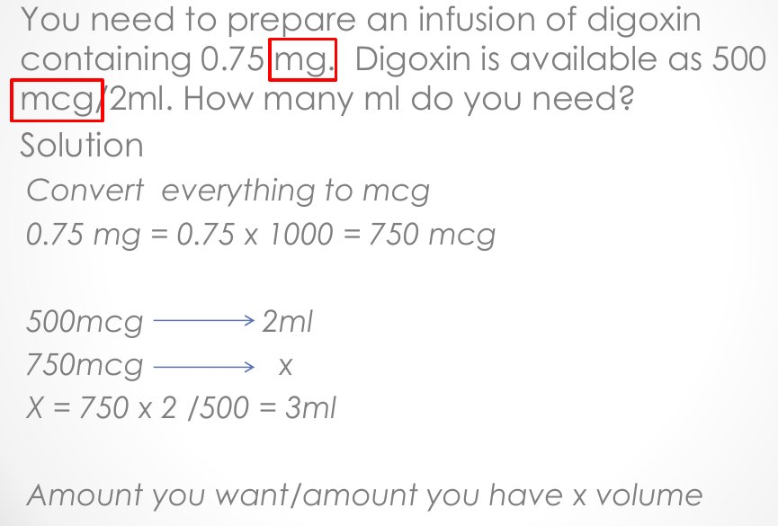

A. The study of how drugs act on receptors in the body
B. The area of study that applies the basic principles of mathematics to the preparation and safe and effective use of pharmaceuticals
C. The science of designing tablets and capsules only
D. The study of drug prices and pharmacy accounting
B. The area of study that applies the basic principles of mathematics to the preparation and safe and effective use of pharmaceuticals
Pharmaceutical calculations is the area of study that applies the basic principles of mathematics to the preparation and safe and effective use of pharmaceuticals.
It is simply math used to prepare medicines and give them safely.
Question 2 of 145
In a proportional set of numbers, when one quantity doubles, the corresponding quantity:
A. Stays the same
B. Also doubles (the two change in the same ratio)
C. Halves
D. Increases by 2 units only
B. Also doubles (the two change in the same ratio)
In a proportional set (e.g. drug concentration 100 mg/5 ml) every pair has the same ratio: 50 mg ↔ 2.5 ml, 150 mg ↔ 7.5 ml. Twice the weight of drug needs twice the volume.

Like a recipe: double the sugar, double the water — the ratio stays the same.
Question 3 of 145
A drug concentration of 100 mg/5 ml and a car speed of 100 km/hour are used in the lecture as examples of:
A. Exponential numbers
B. Inverse relationships
C. Proportional sets of numbers
D. Percentage strengths
C. Proportional sets of numbers
Both are shown under "Proportional set of numbers": weight of drug vs volume, and distance vs time.
Each one is a fixed rate, so the two columns grow together.
Question 4 of 145
According to the lecture, proportional sets can be used to explain the term:
A. Electrolytes
B. Decimals
C. Ratios
D. Exponentials
C. Ratios
Proportional sets can be used to explain the term "ratios". (Note: the slide writes "rations"; the correct word is "ratios".)

A ratio just compares two matching numbers in a proportional set.
Question 5 of 145
The ratio 1 to 5 is written as:
A. 1:5
B. 5:1
C. 5 to 1
D. 1/5 %
A. 1:5
Ratio: 1 to 5 is written 1:5 (the first number before the colon, the second after).
Read it left to right: “1 to 5” → 1:5.
Question 6 of 145
A drug has a concentration of 100 mg/5 ml. What volume contains 75 mg?
A. 3.75 ml
B. 7.5 ml
C. 1.5 ml
D. 15 ml
A. 3.75 ml
Given: 100 mg in 5 ml; want 75 mg. Proportion: 100 mg / 5 ml = 75 mg / x ml x = 75 × 5 / 100 = 3.75 ml (as in the lecture table).
Less drug than 100 mg means less than 5 ml — so the answer must be under 5 ml.
Question 7 of 145
A suspension contains 250 mg/5 ml. What volume contains 125 mg?
A. 0.4 ml
B. 2.5 ml
C. 25 ml
D. 10 ml
B. 2.5 ml
Given: 250 mg in 5 ml; want 125 mg. x = 125 × 5 / 250 = 2.5 ml.
125 mg is half of 250 mg, so you need half of 5 ml.
Question 8 of 145
A syrup contains 120 mg/5 ml. How many mg are in 7.5 ml?
A. 312.5 mg
B. 80 mg
C. 900 mg
D. 180 mg
D. 180 mg
Given: 120 mg in 5 ml; volume 7.5 ml. x = 120 × 7.5 / 5 = 180 mg.
7.5 ml is 1.5 times 5 ml, so the drug is 1.5 times 120 mg.
Question 9 of 145
A car travels at 100 km/hour. How long does it take to travel 150 km?
A. 1.5 hours
B. 0.67 hours
C. 2.5 hours
D. 15 hours
A. 1.5 hours
Given: 100 km in 1 hour; distance 150 km. Time = 150 / 100 = 1.5 hours (lecture table).
Distance and time rise together at a fixed speed.
Question 10 of 145
A car travels at 60 km/hour. How far does it go in 2.5 hours?
A. 62.5 km
B. 600 km
C. 150 km
D. 24 km
C. 150 km
Given: 60 km in 1 hour; time 2.5 h. Distance = 60 × 2.5 = 150 km.
Each hour adds 60 km: 60 + 60 + 30 = 150.
Question 11 of 145
Upper set: 9, 21, 30, 36. Lower set: 3, 7, 10, 12. What is the ratio of the upper set to the lower set?
A. 4:1
B. 3:1
C. 2:1
D. 1:3
B. 3:1
Each number in the upper set is (×3) the corresponding number in the lower set: 9 = 3×3, 21 = 7×3, 30 = 10×3, 36 = 12×3. So the ratio is 3:1. (Note: the slide writes "ration 3:1"; it means "ratio".)
Divide any top number by its bottom number: 9 ÷ 3 = 3, so 3:1.
Question 12 of 145
Upper set: 8, 20, 28. Lower set: 2, 5, 7. What is the ratio of the upper set to the lower set?
A. 2:1
B. 1:2
C. 1:4
D. 4:1
D. 4:1
8 ÷ 2 = 4, 20 ÷ 5 = 4, 28 ÷ 7 = 4 → every pair has ratio 4:1.
Same multiplier in every column = one ratio for the whole set.
Question 13 of 145
Upper set: 2, 5, 7. Lower set: 10, 25, 35. What is the ratio of the upper set to the lower set?
The number on the top of a fraction is the numerator; the bottom number is the denominator. Fraction = numerator / denominator.
Denominator = Down (bottom).
Question 16 of 145
In the fraction 3/8, the number 3 is called the:
A. Numerator
B. Divisor
C. Power
D. Denominator
A. Numerator
Top number = numerator, bottom number = denominator.
Numerator = the number of parts you have (on top).
Question 17 of 145
The ratio 6 to 1 is represented by the fraction 6/1, which is equivalent to:
A. 1/6
B. The natural number 6
C. 60%
D. 0.6
B. The natural number 6
The ratio 6 to 1 is represented by the fraction 6/1, which is equivalent to the natural number 6.
Anything divided by 1 stays the same.
Question 18 of 145
The ratio 1 to 5 is represented by the fraction:
A. 1/5
B. 1/50
C. 5/10
D. 5/1
A. 1/5
The ratio 1 to 5 is represented by a fraction 1/5.
The first number of the ratio goes on top.
Question 19 of 145
In the number 125, the digit 2 represents:
A. Two tenths
B. Two units
C. Two hundreds
D. Two tens
D. Two tens
In 125: 1 represents one hundred, 2 represents two tens, 5 represents five units.
Each place to the left is 10× bigger: units, tens, hundreds.
Question 20 of 145
In the number 0.23, which statement is correct?
A. 2 is in the tenths column and 3 is in the hundredths column, so 0.23 = 23/100
B. 0.23 = 23/10
C. 2 is in the hundredths column and 3 is in the tenths column
D. 0.23 is not a rational number
A. 2 is in the tenths column and 3 is in the hundredths column, so 0.23 = 23/100
The number 0.23 is a rational number. The 2 is in the tenths column and 3 is in the hundredths column. So 0.23 is another name for the fraction 23/100.
The last digit sits in the hundredths place, so put the digits over 100.
Question 21 of 145
Moving one place to the LEFT in a decimal number makes the place value:
A. 10× bigger
B. Unchanged
C. 10× smaller
D. 100× bigger
A. 10× bigger
From the decimal diagram: moving left = 10× bigger; moving right = 10× smaller.
Count the jumps of the decimal point until you pass the 5.
Question 54 of 145
Write 0.0072 in exponential form.
A. 7.2 × 10³
B. 7.2 × 10⁻²
C. 7.2 × 10⁻³
D. 72 × 10⁻³
C. 7.2 × 10⁻³
0.0072 = 7.2 / 1000 = 7.2 × 10⁻³.
Point moves 3 places right to make 7.2 → power −3.
4. Ratio Strength, Percentages, ppm & Variation
18 questions
Question 55 of 145
A percentage is:
A. The number of parts per million
B. The number of parts per one hundred
C. The number of parts per ten
D. The number of parts per thousand
B. The number of parts per one hundred
A percentage is the number of parts per one hundred and is probably the commonest expression of concentration used in pharmacy.
Per-cent = per 100.
Question 56 of 145
According to the lecture, the commonest expression of concentration used in pharmacy is probably:
A. Parts per million
B. Molarity
C. Ratio of ten
D. Percentage
D. Percentage
A percentage is probably the commonest expression of concentration used in pharmacy.
You see "%" on many pharmacy labels (e.g. 1% cream).
Question 57 of 145
1 p.p.m. (part per million) is the same as the ratio:
A. 1:10,000
B. 1:1000
C. 1:100
D. 1:1,000,000
D. 1:1,000,000
1 p.p.m. is 1 part per million = 1:1,000,000.

Million = six zeros.
Question 58 of 145
In a "variation" (inverse) relationship such as dilution, increasing the amount of diluent:
A. Increases the strength of the solution
B. Has no effect on the strength
C. Decreases the strength of the solution
D. Doubles the amount of drug
C. Decreases the strength of the solution
Pharmaceutical calculations sometimes deal with inverse relationships — twice the cause, half the effect — as when you decrease the strength of a solution by increasing the amount of diluent.
More water, same drug → weaker solution.
Question 59 of 145
For a dilution, the relationship used in the lecture is:
A. C₁ + V₁ = C₂ + V₂
B. C₁V₁ = C₂V₂
C. C₁/V₁ = C₂/V₂
D. C₁V₂ = C₂V₁
B. C₁V₁ = C₂V₂
c₁v₁ = c₂v₂ (the amount of drug stays the same; only the volume changes).

Concentration × volume = amount of drug, and the amount does not change when you add water.
Question 60 of 145
In an inverse relationship, if the volume of a solution is made twice as large by dilution, its strength becomes:
A. Four times
B. Half
C. Unchanged
D. Twice
B. Half
Inverse relationship: twice the cause, half the effect.
Spread the same drug in double the volume → half as strong.
Question 61 of 145
Express 1:2500 as a percentage strength.
A. 0.04%
B. 4%
C. 0.4%
D. 25%
A. 0.04%
1 part / 2500 parts = x parts / 100 parts x = 1 × 100 / 2500 = 0.04%. (Note: the slide writes "= 0.04" without the % sign; the answer is 0.04%.)

Ratio → percent: ask "how many parts in 100?" — divide 100 by the bigger number.
Question 62 of 145
Express 1:5000 as a percentage strength.
A. 0.02%
B. 0.002%
C. 0.2%
D. 50%
A. 0.02%
1/5000 = x/100 → x = 1 × 100 / 5000 = 0.02%.
The bigger the second number, the weaker the solution.
Question 63 of 145
Express 1:400 as a percentage strength.
A. 0.025%
B. 2.5%
C. 0.25%
D. 4%
C. 0.25%
1/400 = x/100 → x = 100 / 400 = 0.25%.
100 ÷ 400 is a quarter.
Question 64 of 145
Express 0.1% as a ratio strength.
A. 1:1000
B. 1:100
C. 1:10
D. 1:10,000
A. 1:1000
0.1 g / 100 g = 1 part / y parts y = 100 × 1 / 0.1 = 1000 → ratio strength = 1:1000.
Percent → ratio: divide 100 by the percentage.
Question 65 of 145
Express 0.02% as a ratio strength.
A. 1:50,000
B. 1:500
C. 1:5000
D. 1:50
C. 1:5000
0.02 / 100 = 1 / y → y = 100 / 0.02 = 5000 → 1:5000.
Smaller units → you need more of them → the number gets bigger.
Question 99 of 145
To convert from a SMALLER unit to a LARGER unit (e.g. mcg → mg):
A. Add 1000
B. Multiply by 10
C. Multiply by 1000
D. Divide by 1000
D. Divide by 1000
Smaller → larger unit: ÷ 1000.
Bigger units → you need fewer of them → the number gets smaller.
Question 100 of 145
For large numbers, a unit conversion:
A. Cannot be done
B. Must always be done in a single step
C. Needs a percentage
D. Can involve two steps
D. Can involve two steps
For large numbers, conversion can involve two steps (e.g. kg → g → mg).
Take the ladder one rung at a time.
Question 101 of 145
0.125 mg written as a whole number in a smaller unit is:
A. 12.5 mcg
B. 1250 mcg
C. 125 mcg
D. 125 ng
C. 125 mcg
0.125 mg × 1000 = 125 mcg — the lecture's own example of working in whole numbers.
mg → mcg is one step down: × 1000.
Question 102 of 145
0.5 kg = ____ g = ____ mg
A. 50 g = 50,000 mg
B. 0.0005 g = 0.0000005 mg
C. 500 g = 500,000 mg
D. 500 g = 5000 mg
C. 500 g = 500,000 mg
0.5 kg × 1000 = 500 g; 500 g × 1000 = 500,000 mg (two steps).

kilo means × 1000, so going from kg to g the number gets bigger.
Question 103 of 145
1.5 kg = ____ mg
A. 1500 mg
B. 1,500,000 mg
C. 0.0015 mg
D. 15,000 mg
B. 1,500,000 mg
1.5 kg × 1000 = 1500 g; 1500 g × 1000 = 1,500,000 mg.
Two steps down → × 1000 × 1000.
Question 104 of 145
0.25 g = ____ mg, and this is equal to ____ kg
A. 2500 mg = 0.00025 kg
B. 250 mg = 0.00025 kg
C. 250 mg = 0.25 kg
D. 25 mg = 0.0025 kg
B. 250 mg = 0.00025 kg
0.25 g × 1000 = 250 mg. 0.25 g ÷ 1000 = 0.00025 kg.
Down to mg → × 1000; up to kg → ÷ 1000.
Question 105 of 145
0.075 g = ____ mg
A. 0.000075 mg
B. 7.5 mg
C. 750 mg
D. 75 mg
D. 75 mg
0.075 g × 1000 = 75 mg.
Move the decimal point 3 places to the right.
Question 106 of 145
2500 mg = ____ g
A. 2.5 g
B. 25 g
C. 2,500,000 g
D. 0.25 g
A. 2.5 g
mg → g is smaller → larger: 2500 ÷ 1000 = 2.5 g.
Bigger unit → smaller number.
Question 107 of 145
0.2 mg = ____ mcg
A. 2000 mcg
B. 0.0002 mcg
C. 20 mcg
D. 200 mcg
D. 200 mcg
0.2 mg × 1000 = 200 mcg.
mg → mcg is one step down: × 1000.
Question 108 of 145
0.05 mg = ____ mcg
A. 5 mcg
B. 0.00005 mcg
C. 500 mcg
D. 50 mcg
D. 50 mcg
0.05 mg × 1000 = 50 mcg.
Three places right: 0.050 → 50.
Question 109 of 145
750 mcg = ____ mg
A. 750,000 mg
B. 0.75 mg
C. 0.075 mg
D. 7.5 mg
B. 0.75 mg
mcg → mg is smaller → larger: 750 ÷ 1000 = 0.75 mg.
Three places left: 750 → 0.750.
Question 110 of 145
0.4 mg = ____ kg
A. 400 kg
B. 0.0004 kg
C. 0.000004 kg
D. 0.0000004 kg
D. 0.0000004 kg
Two steps up (÷ 1000 each): 0.4 mg ÷ 1000 = 0.0004 g 0.0004 g ÷ 1000 = 0.0000004 kg (= 4 × 10⁻⁷ kg).
mg → g → kg: going to bigger units twice, so divide twice.
Question 111 of 145
750 mg = ____ kg
A. 0.0075 kg
B. 0.00075 kg
C. 0.75 kg
D. 750,000 kg
B. 0.00075 kg
750 mg ÷ 1000 = 0.75 g; 0.75 g ÷ 1000 = 0.00075 kg.
Two steps up → ÷ 1000 ÷ 1000.
Question 112 of 145
0.5 L = ____ ml
A. 500 ml
B. 0.0005 ml
C. 5000 ml
D. 50 ml
A. 500 ml
0.5 L × 1000 = 500 ml.
Half a 1-litre bottle = 500 ml.
Question 113 of 145
3.2 L = ____ ml
A. 32,000 ml
B. 3200 ml
C. 0.0032 ml
D. 320 ml
B. 3200 ml
3.2 L × 1000 = 3200 ml.
L → ml: × 1000.
Question 114 of 145
4500 ml = ____ L
A. 45 L
B. 0.45 L
C. 4.5 L
D. 4,500,000 L
C. 4.5 L
4500 ml ÷ 1000 = 4.5 L.
ml → L: ÷ 1000.
Question 115 of 145
0.25 mol = ____ mmol
A. 2500 mmol
B. 250 mmol
C. 0.00025 mmol
D. 25 mmol
B. 250 mmol
0.25 mol × 1000 = 250 mmol.
milli works the same for moles as for grams or litres: × 1000.
Question 116 of 145
0.6 mol = ____ mmol
A. 60 mmol
B. 600 mmol
C. 0.0006 mmol
D. 6000 mmol
B. 600 mmol
0.6 mol × 1000 = 600 mmol.
Larger → smaller unit: × 1000.
Question 117 of 145
A solution contains 1.25 mol of sodium chloride. How many mmol is this?
A. 125 mmol
B. 12.5 mmol
C. 1250 mmol
D. 0.00125 mmol
C. 1250 mmol
1.25 mol × 1000 = 1250 mmol.
Just move the decimal point three places to the right.
Question 118 of 145
For converting height, 1 inch is equal to:
A. 2.54 cm
B. 12 cm
C. 25.4 cm
D. 0.394 cm
A. 2.54 cm
Standard equivalence: 1 inch = 2.54 cm. So inches → cm: × 2.54. (Not solved in the lecture.)
An inch is a bit longer than 2.5 cm — about the width of a thumb.
Question 119 of 145
A patient is 64 inches tall. What is the height in cm?
A. 162.56 cm
B. 1625.6 cm
C. 64.254 cm
D. 25.2 cm
A. 162.56 cm
Given: 64 in; factor 1 in = 2.54 cm. 64 × 2.54 = 162.56 cm (≈ 162.6 cm).
cm is the smaller unit, so the number must get bigger: multiply.
Question 120 of 145
For converting weight, 1 kg is approximately equal to:
A. 1000 lb
B. 0.45 lb
C. 22 lb
D. 2.2 lb
D. 2.2 lb
Standard equivalence: 1 kg ≈ 2.2 lb (1 lb ≈ 0.454 kg). So pounds → kg: ÷ 2.2. (Not solved in the lecture.)
A kilogram is heavier than a pound, so there are more pounds than kilograms for the same person.
Question 121 of 145
A patient weighs 176 lb. What is the weight in kg?
A. 176,000 kg
B. 387.2 kg
C. 80 kg
D. 17.6 kg
C. 80 kg
Given: 176 lb; factor 1 kg = 2.2 lb. 176 ÷ 2.2 = 80 kg. (Using 1 lb = 0.4536 kg: 176 × 0.4536 = 79.8 kg ≈ 80 kg.)
The number of kg is always smaller than the number of lb — so divide, don't multiply.
Question 122 of 145
A patient weighs 154 lb. What is the weight in kg?
A. 338.8 kg
B. 70 kg
C. 154 kg
D. 15.4 kg
B. 70 kg
154 ÷ 2.2 = 70 kg (154 × 0.4536 = 69.9 kg ≈ 70 kg).
Multiplying by 2.2 (giving 338.8) is the classic wrong-direction mistake.
7. Dosage Calculations & Methodical Approach
23 questions
Question 123 of 145
The objectives of the dosage-calculations part of the lecture are to calculate:
A. Only percentage strengths
B. Divided doses, and dosage from body weight or body surface area
C. Only electrolyte levels
D. Only the cost of a prescription
B. Divided doses, and dosage from body weight or body surface area
Objectives: calculate divided doses; calculate dosage from body weight or body surface area.
Two skills: splitting a daily dose, and dosing by patient size.
Question 124 of 145
A dose of 3 mg/kg means:
A. For every kg of the patient's weight, you need 3 mg of drug
B. 3 mg per day regardless of weight
C. 3 mg is the total dose for any patient
D. 3 kg of drug per mg of weight
A. For every kg of the patient's weight, you need 3 mg of drug
The dose 3 mg/kg means that for every kg of patient's weight, you will need 3 mg of drug.
"Per kg" = "for each kilogram of the patient".
Question 125 of 145
Total dose required (weight-based) is calculated as:
A. Dose/kg ÷ patient's weight
B. Dose/kg + patient's weight
C. Patient's weight ÷ dose/kg
D. Dose/kg × patient's weight
D. Dose/kg × patient's weight
Total dose required = dose/kg × patient's weight. The same applies to body surface area (dose/m² × BSA).
A heavier patient needs more drug, so multiply.
Question 126 of 145
When a drug's dose is given as a total daily dose, it often has to be given:
A. Only as an infusion
B. All at once in the morning only
C. In divided doses (e.g. 3 or 4 times a day)
D. Once a week
C. In divided doses (e.g. 3 or 4 times a day)
In some cases the dose is given as a total daily dose that has to be given in divided doses (3 or 4 times a day). Read and interpret the wording carefully.
Daily total ÷ number of doses = each dose.
Question 127 of 145
A dose to be given "every 8 hours" means the number of doses per day is:
A. 4
B. 3
C. 2
D. 8
B. 3
24 h ÷ 8 h = 3 → 8-hourly = 3 divided doses daily.
Divide the 24 hours of a day by the gap between doses.
Question 128 of 145
"Amount you want / amount you have × volume" is used to calculate:
A. The volume of a stock preparation needed to give a required dose
B. The patient's body surface area
C. The percentage strength of a ratio
D. The number of doses per day
A. The volume of a stock preparation needed to give a required dose
Volume needed = (amount you want ÷ amount you have) × volume it comes in (the digoxin example).

Want ÷ Have × Volume — the classic "what I want over what I have" formula.
Question 129 of 145
Which is part of the methodical approach recommended in the lecture?
A. Never estimate the answer
B. Always ensure that units match (g with g, NOT g with mg)
C. Mix units freely if the numbers are small
D. Skip writing steps to save time
B. Always ensure that units match (g with g, NOT g with mg)
Methodical approach: understand the process (what are you doing and why?); be logical and work one step at a time; neatly write down the steps, do not jump; always ensure that units match (g with g, NOT g with mg); approximate the answer and compare with the calculated answer; ask whether the answer is reasonable and sensible; double-check the answer.
Mixing mg and g is the fastest way to a 1000× error.
Question 130 of 145
Before trusting a calculated dose, the lecture advises you to:
A. Round it to the nearest 100
B. Approximate the answer, compare it with the calculated answer and ask whether it is reasonable
C. Convert it to a percentage
D. Accept it if the calculator shows it
B. Approximate the answer, compare it with the calculated answer and ask whether it is reasonable
Approximate the answer and compare with the calculated answer; ask whether the answer is reasonable and sensible; double-check the answer.
If a child's dose comes out as 50 tablets, something went wrong.
Question 131 of 145
"Understand the process" in the methodical approach means asking:
A. How many decimal places the slide uses?
B. Who wrote the prescription?
C. Which calculator to use?
D. What are you doing and why?
D. What are you doing and why?
Understand the process — what are you doing and why?
Know the goal before you start the math.
Question 132 of 145
According to the methodical approach, you should neatly write down every step and not jump.
True
False
True
Be logical and work one step at a time; neatly write down the steps all the time, do not jump.
Written steps make mistakes easy to spot.
Question 133 of 145
According to the methodical approach, it is acceptable to divide a dose in grams by a stock strength in milligrams without converting.
True
False
False
False. Always ensure that units match (g with g, NOT g with mg).
Convert first, then calculate.
Question 134 of 145
The dose required is 3 mg/kg and the patient weighs 68 kg. What is the total dose?
A. 2040 mg
B. 71 mg
C. 204 mg
D. 22.7 mg
C. 204 mg
Total dose = dose/kg × weight = 3 mg/kg × 68 kg = 204 mg. (Note: the slide reads "the weighs 68 kg" — the word "patient" is missing — and writes "3 mg/kg = 3 × 68"; it means 3 mg/kg × 68 kg.)
Every kilogram gets 3 mg, so 68 kilograms get 68 × 3.
Question 135 of 145
The dose of a drug is 1.5 mg/kg and the patient weighs 72 kg. What is the total dose?
A. 108 mg
B. 48 mg
C. 73.5 mg
D. 1080 mg
A. 108 mg
Total dose = 1.5 mg/kg × 72 kg = 108 mg.
Dose per kg × kg = total mg.
Question 136 of 145
A drug dose is 100 mg/m² and the patient's body surface area is 1.8 m². What is the total dose?
A. 101.8 mg
B. 55.6 mg
C. 18 mg
D. 180 mg
D. 180 mg
The same rule applies to body surface area: total dose = dose/m² × BSA = 100 mg/m² × 1.8 m² = 180 mg.
Same idea as mg/kg — just replace weight with body surface area.
Question 137 of 145
Ibuprofen 1.2 g daily is given 3 times daily. What is each single dose?
A. 3600 mg
B. 400 mg
C. 0.4 mg
D. 40 mg
B. 400 mg
Convert: 1.2 g × 1000 = 1200 mg. Each dose = 1200 mg ÷ 3 = 400 mg.
Share the daily total equally among the doses.
Question 138 of 145
Paracetamol 4 g daily is given in 4 divided doses. What is each single dose?
A. 100 mg
B. 250 mg
C. 1000 mg
D. 16,000 mg
C. 1000 mg
Convert: 4 g = 4000 mg. Each dose = 4000 ÷ 4 = 1000 mg (1 g).
Divide, don't multiply: each dose is smaller than the daily total.
Question 139 of 145
Amoxicillin 1.5 g daily is given 3 times daily. What is each single dose?
A. 4500 mg
B. 50 mg
C. 500 mg
D. 0.5 mg
C. 500 mg
Convert: 1.5 g = 1500 mg. Each dose = 1500 ÷ 3 = 500 mg.
Convert to mg first so the answer is a whole number.
Question 140 of 145
The dose for cefuroxime IV is 2.25 g daily in divided doses every 8 hours. What is each dose?
A. 281.25 mg every 8 hours
B. 750 mg every 8 hours
C. 6.75 g every 8 hours
D. 1125 mg every 8 hours
B. 750 mg every 8 hours
8-hourly = 24 ÷ 8 = 3 divided doses daily. 2.25 g ÷ 3 = 0.75 g = 750 mg every 8 hours.
Dividing by 8 (the hours) instead of 3 (the number of doses) is the common trap — read the wording carefully.
Question 141 of 145
A drug is prescribed 4 g daily in divided doses every 6 hours. What is each dose?
A. 24 g every 6 hours
B. 0.67 g every 6 hours
C. 1 g every 6 hours
D. 1.5 g every 6 hours
C. 1 g every 6 hours
6-hourly = 24 ÷ 6 = 4 doses daily. 4 g ÷ 4 = 1 g (1000 mg) every 6 hours.
First turn "every X hours" into "how many times a day".
Question 142 of 145
A drug is prescribed 3 g daily in divided doses every 12 hours. What is each dose?
A. 6 g every 12 hours
B. 1.5 g every 12 hours
C. 0.25 g every 12 hours
D. 1 g every 12 hours
B. 1.5 g every 12 hours
12-hourly = 24 ÷ 12 = 2 doses daily. 3 g ÷ 2 = 1.5 g (1500 mg) every 12 hours.
Every 12 hours = twice a day.
Question 143 of 145
You need to prepare an infusion of digoxin containing 0.75 mg. Digoxin is available as 500 mcg/2 ml. How many ml do you need?
A. 3 ml
B. 0.003 ml
C. 375 ml
D. 1.33 ml
A. 3 ml
Convert everything to mcg: 0.75 mg × 1000 = 750 mcg. 500 mcg → 2 ml; 750 mcg → x x = 750 × 2 / 500 = 3 ml. (Amount you want / amount you have × volume.)
Make the units match first (mg vs mcg); then want ÷ have × volume.
Question 144 of 145
You need 0.25 mg of digoxin. It is available as 500 mcg/2 ml. How many ml do you need?